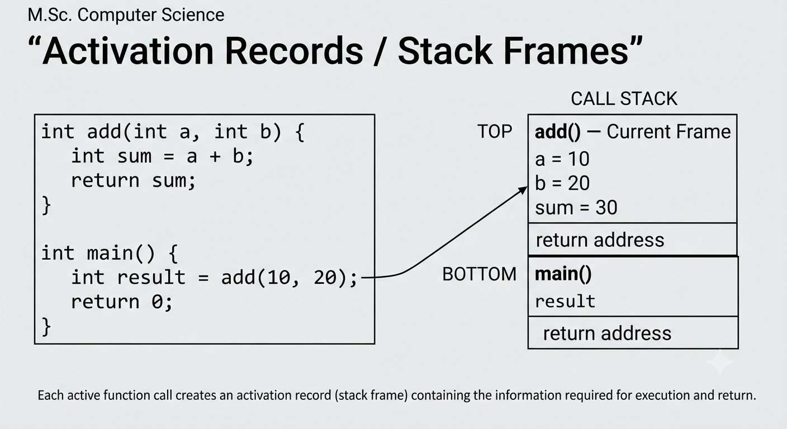
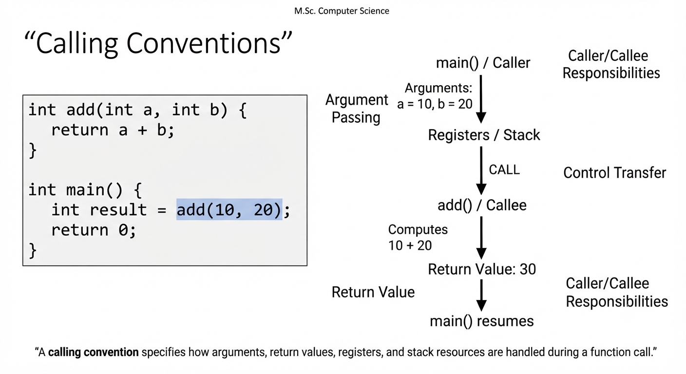
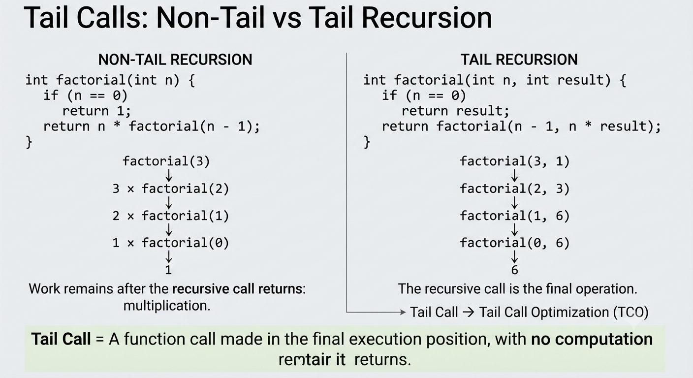

How Function Calls Are Handled and Tail Call Optimization in Functional Languages
Presentation By Maitrayee Gawde
A function call transfers program control from a caller to a called function. The runtime must preserve the caller’s execution state while the called function executes.
Call and return mechanisms manage arguments, local variables, return addresses, saved registers, temporary values, and results.
An activation record, or stack frame, stores the information required to execute a function and return safely to its caller.
Values supplied to the function.
Variables used during execution.
Where execution continues after return.
Registers and temporary values that must survive the call.

A calling convention defines how a caller and callee communicate at the machine level and provides a standard interface between separately compiled functions.

A tail call occurs when a function call is the final operation performed by the calling function.
There is no computation remaining after the called function returns. Therefore, the caller’s stack frame can potentially be reused.
Tail calls are particularly important in functional programming and recursive algorithms, where recursion may replace traditional loops.
Tail Call Optimization is a compiler optimization that eliminates unnecessary stack-frame creation for calls in tail position.

factorial(3, 1)
↓ Create new frame
factorial(2, 3)
↓ Create new frame
factorial(1, 6)
factorial(3, 1)
↓ Reuse current frame
factorial(2, 3)
↓ Reuse current frame
factorial(1, 6)
Without TCO, recursive calls can cause the call stack to grow. With TCO, the current frame can be reused when the call is in tail position.
Functional languages often use recursion instead of loops. TCO prevents each recursive call from creating a new stack frame.
For sum(5, 0):
| Aspect | Normal Call | Tail Call |
|---|---|---|
| Position | Can occur anywhere. | Must be the final operation. |
| Stack Usage | May grow with recursion. | Can remain constant with TCO. |
| Optimization | General call handling. | Suitable for TCO. |
Reusing the current frame avoids accumulating a stack frame for every tail-recursive call.
Recursive solutions can avoid the same stack-growth problem associated with ordinary recursion.
TCO makes recursion practical as an alternative to iteration.
Efficient call handling is a key part of how modern programming languages execute functions safely and efficiently.